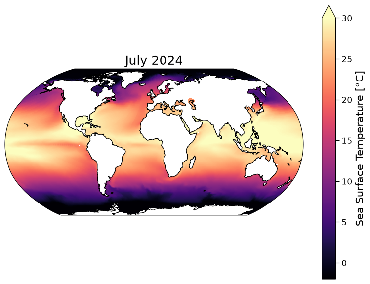
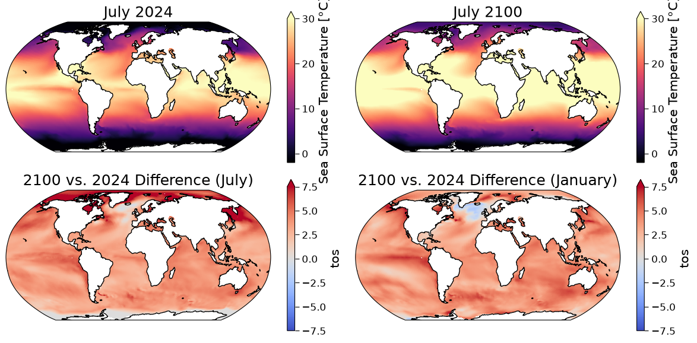
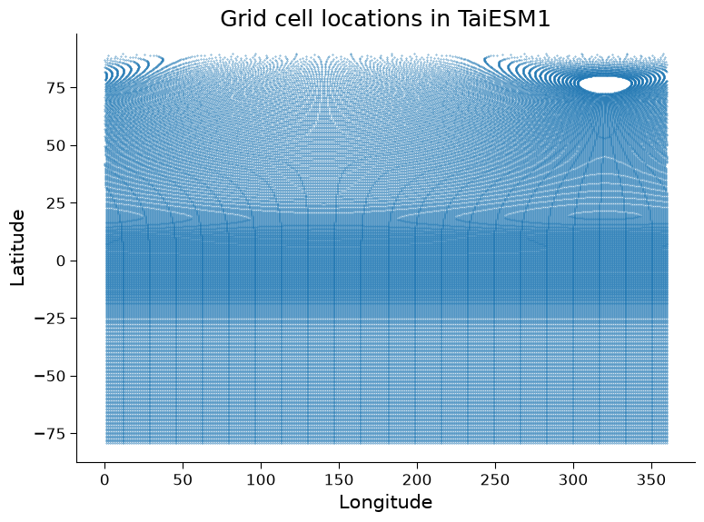

Tutorial 7: Introduction to CMIP6 Earth System Models#
Week 1, Day 5, Introduction to Climate Modeling
Content creators: Julius Busecke, Robert Ford, Tom Nicholas, Brodie Pearson, and Brian E. J. Rose
Content reviewers: Mujeeb Abdulfatai, Nkongho Ayuketang Arreyndip, Jeffrey N. A. Aryee, Younkap Nina Duplex, Sloane Garelick, Paul Heubel, Zahra Khodakaramimaghsoud, Peter Ohue, Jenna Pearson, Agustina Pesce, Abel Shibu, Derick Temfack, Peizhen Yang, Cheng Zhang, Chi Zhang, Ohad Zivan
Content editors: Paul Heubel, Jenna Pearson, Ohad Zivan, Chi Zhang
Production editors: Wesley Banfield, Paul Heubel, Jenna Pearson, Konstantine Tsafatinos, Chi Zhang, Ohad Zivan
Our 2024 Sponsors: CMIP, NFDI4Earth
Tutorial Objectives#
Estimated timing of tutorial: 30 minutes
Earth System Models (ESMs) provide physically-based projections of how Earth’s climate could change in the coming years, decades, and centuries at both global and local scales. In the following tutorial, you will:
Learn how to load, visualize, and manipulate ESM data from the Coupled Model Intercomparison Project (CMIP6)
Create maps showing projected future changes in sea surface temperature (SST)
Regrid SST data from a model-native grid to a regular latitude-longitude grid.
Setup#
# installations ( uncomment and run this cell ONLY when using google colab or kaggle )
# !wget -q https://github.com/conda-forge/miniforge/releases/latest/download/Miniforge3-Linux-x86_64.sh
# !bash Miniforge3-Linux-x86_64.sh -b -p /opt/mf
# !/opt/mf/bin/mamba install -y -c conda-forge python=3.12 xesmf 'xarray==2024.2.0' xarray-datatree intake-esm gcsfs xmip aiohttp cartopy nc-time-axis cf_xarray xarrayutils
# !ln -sf /opt/mf/lib/libstdc++.so.6 /usr/lib/x86_64-linux-gnu/libstdc++.so.6
# !ln -sf /opt/mf/lib/libssl.so.3 /usr/lib/x86_64-linux-gnu/libssl.so.3
# !ln -sf /opt/mf/lib/libcrypto.so.3 /usr/lib/x86_64-linux-gnu/libcrypto.so.3
# installations ( uncomment and run this cell ONLY when using google colab or kaggle )
# the newest version of xESMF (and esmPY) requires an environment variable to be set upon environment activation.
# for Google Colab users you will need to set this manually, see this page for reference: https://github.com/esmf-org/esmf/pull/151
# to do this uncomment the following lines before running the cell:
# Restart the session, uncomment and run below
# import sys, os
# sys.path.insert(0, '/opt/mf/lib/python3.12/site-packages')
# os.environ['ESMFMKFILE'] = '/opt/mf/lib/esmf.mk'
# import xesmf as xe
# print('xesmf', xe.__version__, 'ready')
# imports
import intake
import numpy as np
import matplotlib.pyplot as plt
import xarray as xr
import xesmf as xe
from xmip.preprocessing import combined_preprocessing
from datatree import DataTree
import cartopy.crs as ccrs
Install and import feedback gadget#
Show code cell source
# @title Install and import feedback gadget
!pip3 install vibecheck datatops --quiet
from vibecheck import DatatopsContentReviewContainer
def content_review(notebook_section: str):
return DatatopsContentReviewContainer(
"", # No text prompt
notebook_section,
{
"url": "https://pmyvdlilci.execute-api.us-east-1.amazonaws.com/klab",
"name": "comptools_4clim",
"user_key": "l5jpxuee",
},
).render()
feedback_prefix = "W1D5_T7"
Figure settings#
Show code cell source
# @title Figure settings
import ipywidgets as widgets # interactive display
plt.style.use(
"https://raw.githubusercontent.com/neuromatch/climate-course-content/main/cma.mplstyle"
)
%matplotlib inline
Video 1: Introduction to Earth System Models#
Submit your feedback#
Show code cell source
# @title Submit your feedback
content_review(f"{feedback_prefix}_Recap_Earth_System_Models_Video")
If you want to download the slides: https://osf.io/download/x3kwy/
Submit your feedback#
Show code cell source
# @title Submit your feedback
content_review(f"{feedback_prefix}_Recap_Earth_System_Models_Slides")
Section 1: Accessing Earth System Model data#
In the previous tutorials we developed some simple conceptual climate models. Here we will jump to the most complex type of climate model, an Earth System Model (ESM).
ESMs include the physical processes typical of General Circulation Models (GCMs), but also include chemical and biological changes within the climate system (e.g. changes in vegetation, biomes, atmospheric CO\(_2\)).
The several systems simulated in an ESM (ocean, atmosphere, cryosphere, land) are coupled to each other, and each system has its own variables, physics, and discretizations – both of the spatial grid and the timestep.

Atmospheric Model Schematic (Credit: Wikipedia)
The one specific ESM we will analyze here is the Taiwan Earth System Model version 1 (TaiESM1).
TaiESM1 was developed by modifying an earlier version of CESM2, the Community Earth System Model, version 2, to include different parameterizations (i.e., physics). As a result, the two models are distinct from each other.
Section 1.1: Finding & Opening CMIP6 Data with Xarray#
Massive projects like CMIP6 can contain millions of datasets. For most practical applications we only need a subset of the data, which we can select by specifying exactly which data sets we need.
Although we will only work with monthly SST (ocean) data today, the methods introduced can easily be applied/extended to load and analyze other CMIP6 variables, including from other components of the Earth system.
There are many ways to access the CMIP6 data, but here we will show a workflow using an intake-esm catalog object based on a CSV file that is maintained by the pangeo community. Additional methods to access CMIP data are discussed in our CMIP Resource Bank.
col = intake.open_esm_datastore(
"https://storage.googleapis.com/cmip6/pangeo-cmip6.json"
) # open an intake catalog containing the Pangeo CMIP cloud data
col
pangeo-cmip6 catalog with 7674 dataset(s) from 514818 asset(s):
| unique | |
|---|---|
| activity_id | 18 |
| institution_id | 36 |
| source_id | 88 |
| experiment_id | 170 |
| member_id | 657 |
| table_id | 37 |
| variable_id | 700 |
| grid_label | 10 |
| zstore | 514818 |
| dcpp_init_year | 60 |
| version | 736 |
| derived_variable_id | 0 |
We just loaded the full collection of Pangeo cloud datasets into an intake catalog. The naming conventions of CMIP6 data sets are standardized across all models and experiments, which allows us to access multiple related data sets with efficient code.
In the intake catalog above, we can see several different aspects of the CMIP6 naming conventions, including the following:
variable_id: The variable(s) of interest
Here we’ll be working with SST, which in CMIP6 SST is called tos
source_id: The CMIP6 model(s) that we want data from.
table_id: The origin system and output frequency desired of the variable(s)
Here we use Omon - data from the ocean model at monthly resolution.
grid_id: The grid that we want the data to be on.
Here we use gn which is data on the model’s native grid. Some models also provide gr (regridded data) and other grid options.
experiment_id: The CMIP6 experiments that we want to analyze
We will load one experiment: ssp585. We’ll discuss scenarios more in the next tutorial.
member_id: this distinguishes simulations if the same model is run repeatedly for an experiment
We use r1i1p1f1 for now, but will explore this in a later tutorial
Each of these terms is called a facet in CMIP vocabulary. To learn more about CMIP and the possible facets please see our CMIP Resource Bank and the CMIP website.
Try running
col.df['source_id'].unique()
in the next cell to get a list of all available models!
Now we will create a subset according to the provided facets using the .search() method, and finally open the cloud-stored zarr stores into Xarray datasets.
The data returned are Xarray datasets that contain dask arrays. These are ‘lazy’, meaning the actual data will only be loaded when a computation is performed. What is loaded here is only the metadata, which enables us to inspect the data (e.g. the dimensionality/variable units) without loading in GBs or TBs of data!
A subtle but important step in the opening stage is the use of a preprocessing function! By passing preprocess=combined_preprocessing we apply crowdsourced fixes from the xMIP package to each dataset. This ensures consistent naming of dimensions (and other convenient things - see here for more).
Although we will only work with monthly SST (ocean) data today, the methods introduced can easily be applied/extended to load and analyze other CMIP6 variables, including from other components of the Earth system.
# from the full `col` object, create a subset using facet search
cat = col.search(
source_id=["TaiESM1"
#,"MPI-ESM1-2-LR" # alternative model specification
],
variable_id="tos",
member_id="r1i1p1f1",
table_id="Omon",
grid_label="gn",
experiment_id=["ssp585",
#"ssp245",
"historical"],
require_all_on=[
"source_id"
], # make sure that we only get models which have all of the above experiments
)
# convert the sub-catalog into a datatree object, by opening each dataset into an xarray.Dataset (without loading the data)
kwargs = dict(
preprocess=combined_preprocessing, # apply xMIP fixes to each dataset
xarray_open_kwargs=dict(
use_cftime=True
), # ensure all datasets use the same time index
storage_options={
"token": "anon"
}, # anonymous/public authentication to google cloud storage
)
cat.esmcat.aggregation_control.groupby_attrs = ["source_id", "experiment_id"]
dt = cat.to_datatree(**kwargs)
--> The keys in the returned dictionary of datasets are constructed as follows:
'source_id/experiment_id'
cat.keys()
['TaiESM1.historical', 'TaiESM1.ssp585']
Section 1.2: Checking the CMIP6 DataTree#
We now have a “datatree” containing the data we searched for. A datatree is a high-level container of Xarray data, useful for organizing many related datasets together. You can think of a single DataTree object as being like a (nested) dictionary of xarray.Dataset objects. Each dataset in the tree is known as a “node” or “group”, and we can also have empty nodes.
This DataTree object may seem overly complicated with just a couple of datasets, but it will prove to be very useful in later tutorials where you will work with multiple models, experiments, and ensemble members.
You can explore the nodes of the tree and its contents interactively in a similar way to how you can explore the contents of an xarray.Dataset. Click on the arrows to expand the information about the datatree below:
dt
<xarray.DatasetView> Size: 0B
Dimensions: ()
Data variables:
*empty*Each group in the tree is stored under a corresponding name, and we can select nodes via their name. The real usefulness of a datatree comes from having many groups at different depths, analogous to how one might store files in nested directories (e.g. day1/experiment1/data.txt, day1/experiment2/data.txt etc.).
In our case, the particular datatree object has different CMIP models and different experiments stored at distinct levels of the tree. This is useful because we can select just one experiment for one model, or all experiments for one model, or all experiments for all models!
We can also apply Xarray operations (e.g. taking the average using the .mean() method) over all the data in a tree at once, just by calling that same method on the DataTree object. We can even map custom functions over all nodes in the tree using dt.map_over_subtree(my_function).
All the operations below can be accomplished without using datatrees, but it saves us many lines of code as we don’t have to use for loops over all our the different datasets. For more information about datatree see the documentation here.
Now, let’s pull out a single model (TaiESM1) and experiment (ssp585) from our datatree:
ssp585 = dt["TaiESM1"]["ssp585"].ds
ssp585
<xarray.DatasetView> Size: 521MB
Dimensions: (member_id: 1, dcpp_init_year: 1, time: 1032, y: 384,
x: 320, vertex: 4, bnds: 2)
Coordinates:
lat (y, x) float64 983kB dask.array<chunksize=(384, 320), meta=np.ndarray>
lon (y, x) float64 983kB dask.array<chunksize=(384, 320), meta=np.ndarray>
* time (time) object 8kB 2015-01-17 00:29:59.999993 ... 2100-12-...
lat_verticies (y, x, vertex) float64 4MB dask.array<chunksize=(384, 320, 4), meta=np.ndarray>
lon_verticies (y, x, vertex) float64 4MB dask.array<chunksize=(384, 320, 4), meta=np.ndarray>
time_bounds (time, bnds) object 17kB dask.array<chunksize=(1032, 2), meta=np.ndarray>
* y (y) int64 3kB 0 1 2 3 4 5 6 ... 377 378 379 380 381 382 383
* x (x) int64 3kB 0 1 2 3 4 5 6 ... 313 314 315 316 317 318 319
lon_bounds (bnds, y, x) float64 2MB dask.array<chunksize=(1, 384, 320), meta=np.ndarray>
lat_bounds (bnds, y, x) float64 2MB dask.array<chunksize=(1, 384, 320), meta=np.ndarray>
* member_id (member_id) object 8B 'r1i1p1f1'
* dcpp_init_year (dcpp_init_year) float64 8B nan
Dimensions without coordinates: vertex, bnds
Data variables:
tos (member_id, dcpp_init_year, time, y, x) float32 507MB dask.array<chunksize=(1, 1, 87, 384, 320), meta=np.ndarray>
Attributes: (12/62)
Conventions: CF-1.7 CMIP-6.2
activity_id: ScenarioMIP
branch_method: Hybrid-restart from year 2015-01-01 of ...
branch_time_in_child: 0.0
branch_time_in_parent: 60225.0
cmor_version: 3.5.0
... ...
intake_esm_attrs:variable_id: tos
intake_esm_attrs:grid_label: gn
intake_esm_attrs:zstore: gs://cmip6/CMIP6/ScenarioMIP/AS-RCEC/Ta...
intake_esm_attrs:version: 20210416
intake_esm_attrs:_data_format_: zarr
intake_esm_dataset_key: TaiESM1/ssp585We now have a more familiar single Xarray dataset containing a single Data variable tos. We can access the DataArray for our tos variable as usual, and inspect its attributes like long_name and units:
ssp585.tos
<xarray.DataArray 'tos' (member_id: 1, dcpp_init_year: 1, time: 1032, y: 384,
x: 320)> Size: 507MB
dask.array<broadcast_to, shape=(1, 1, 1032, 384, 320), dtype=float32, chunksize=(1, 1, 87, 384, 320), chunktype=numpy.ndarray>
Coordinates:
lat (y, x) float64 983kB dask.array<chunksize=(384, 320), meta=np.ndarray>
lon (y, x) float64 983kB dask.array<chunksize=(384, 320), meta=np.ndarray>
* time (time) object 8kB 2015-01-17 00:29:59.999993 ... 2100-12-...
* y (y) int64 3kB 0 1 2 3 4 5 6 ... 377 378 379 380 381 382 383
* x (x) int64 3kB 0 1 2 3 4 5 6 ... 313 314 315 316 317 318 319
* member_id (member_id) object 8B 'r1i1p1f1'
* dcpp_init_year (dcpp_init_year) float64 8B nan
Attributes:
cell_measures: area: areacello
cell_methods: area: mean where sea time: mean
comment: Temperature of upper boundary of the liquid ocean, includ...
history: 2021-04-16T01:30:38Z altered by CMOR: replaced missing va...
long_name: Sea Surface Temperature
original_name: TEMP
standard_name: sea_surface_temperature
units: °CSection 2: Plotting maps of Sea Surface Temperature#
Now that we have the model dataset organized within this datatree dt we can plot the datasets. Let’s start by plotting a map of SST from TaiESM in July 2024.
Note that CMIP6 experiments were run several years ago, so the cut-off between past (observed forcing) and future (scenario-based/projected forcing) was at the start of 2015. This means that July 2024 is about 9 years into the CMIP6 future and so it is unlikely to look exactly like Earth’s current SST state.
# Set up our figure with a Cartopy map projection
fig, (ax_present) = plt.subplots(subplot_kw={"projection": ccrs.Robinson()}
)
# select the model data for July 2024
sst_present = ssp585.tos.sel(time="2024-07").squeeze()
# note that .squeeze() just removes singleton dimensions
# plot the model data
sst_present.plot(
ax=ax_present,
x="lon",
y="lat",
transform=ccrs.PlateCarree(),
vmin=-2,
vmax=30,
cmap="magma",
robust=True,
)
ax_present.coastlines()
ax_present.set_title("July 2024")
Text(0.5, 1.0, 'July 2024')

Coding Exercises 2#
Now that we can plot maps of CMIP6 data, let’s look at some projected future changes using this data!
In this coding exercise your goals are to:
Create a map of the projected sea surface temperature in July 2100 under the SSP5-8.5 high-emissions scenario (we’ll discuss scenarios in the next mini-lecture) using data from the TaiESM1 CMIP6 model.
Create a map showing how this sea surface temperature (SST, tos) projection is different from the current (July 2024) sea surface temperature in this model
Plot a similar map for this model that shows how January 2100 is different from January 2024
To get you started, we have provided code to load the required data set into a variable called sst_ssp585, and we have plotted the current (July 2024) sea surface temperature from this data set.
Note: differences between two snapshots of SST are not the same as the anomalies that you encountered earlier in the course, which were the difference relative to the average during a reference period.
# select just a single model and experiment
sst_ssp585 = dt["TaiESM1"]["ssp585"].ds.tos
fig, ([ax_present, ax_future], [ax_diff_july, ax_diff_jan]) = plt.subplots(
ncols=2, nrows=2, figsize=[12, 6], subplot_kw={"projection": ccrs.Robinson()}
)
# plot a timestep for 2024
sst_present = sst_ssp585.sel(time="2024-07").squeeze()
sst_present.plot(
ax=ax_present,
x="lon",
y="lat",
transform=ccrs.PlateCarree(),
vmin=-2,
vmax=30,
cmap="magma",
robust=True,
)
ax_present.coastlines()
ax_present.set_title("July 2024")
# repeat for 2100
# complete the following line to extract data for July 2100
sst_future = ...
_ = ...
ax_future.coastlines()
ax_future.set_title("July 2100")
# now find the difference between July 2100 and July 2024
# complete the following line to extract the July difference
sst_difference_july = ...
_ = ...
ax_diff_july.coastlines()
ax_diff_july.set_title("2100 vs. 2024 Difference (July)")
# finally, find the difference between January of the two years used above
# complete the following line to extract the January difference
sst_difference_jan = ...
_ = ...
ax_diff_jan.coastlines()
ax_diff_jan.set_title("2100 vs. 2024 Difference (January)")
# to_remove solution
# select just a single model and experiment
sst_ssp585 = dt["TaiESM1"]["ssp585"].ds.tos
fig, ([ax_present, ax_future], [ax_diff_july, ax_diff_jan]) = plt.subplots(
ncols=2, nrows=2, figsize=[12, 6], subplot_kw={"projection": ccrs.Robinson()}
)
# plot a timestep for 2024
sst_present = sst_ssp585.sel(time="2024-07").squeeze()
sst_present.plot(
ax=ax_present,
x="lon",
y="lat",
transform=ccrs.PlateCarree(),
vmin=-2,
vmax=30,
cmap="magma",
robust=True,
)
ax_present.coastlines()
ax_present.set_title("July 2024")
# repeat for 2100
# complete the following line to extract data for July 2100
sst_future = sst_ssp585.sel(time="2100-07").squeeze()
_ = sst_future.plot(
ax=ax_future,
x="lon",
y="lat",
transform=ccrs.PlateCarree(),
vmin=-2,
vmax=30,
cmap="magma",
robust=True,
)
ax_future.coastlines()
ax_future.set_title("July 2100")
# now find the difference between July 2100 and July 2024
# complete the following line to extract the July difference
sst_difference_july = sst_future - sst_present
_ = sst_difference_july.plot(
ax=ax_diff_july,
x="lon",
y="lat",
transform=ccrs.PlateCarree(),
vmin=-7.5,
vmax=7.5,
cmap="coolwarm",
)
ax_diff_july.coastlines()
ax_diff_july.set_title("2100 vs. 2024 Difference (July)")
# finally, find the difference between January of the two years used above
# complete the following line to extract the January difference
sst_difference_jan = (
sst_ssp585.sel(time="2100-01").squeeze() - sst_ssp585.sel(time="2024-01").squeeze()
)
_ = sst_difference_jan.plot(
ax=ax_diff_jan,
x="lon",
y="lat",
transform=ccrs.PlateCarree(),
vmin=-7.5,
vmax=7.5,
cmap="coolwarm",
)
ax_diff_jan.coastlines()
ax_diff_jan.set_title("2100 vs. 2024 Difference (January)")
Text(0.5, 1.0, '2100 vs. 2024 Difference (January)')

Submit your feedback#
Show code cell source
# @title Submit your feedback
content_review(f"{feedback_prefix}_Coding_Exercises_2")
Questions 2: Climate Connection#
Comparing only the top two panels, how is the July SST projected to change in this particular model simulation? Do these changes agree with the map of July change that you plotted in the bottom left, and are these changes easier to see in this bottom map?
In what ways are the July and January maps similar or dissimilar, and can you think of any physical explanations for these (dis)similarities?
Why do you think the color bar axes vary? (i.e., the top panels say “Sea Surface Temperature [\(^oC\)]” while the bottom panels say “tos”)
Many of the changes seen in the maps are a result of a changing climate under this high-emissions scenarios. However, keep in mind that these are differences between two months that are almost 80 years apart, so some of the changes are due to weather/synoptic differences between these particular months.
# to_remove explanation
"""
1. Based on the top maps, it looks like the Equator and low latitudes warm significantly, and the higher latitudes also warm. The northern hemisphere warms more than the southern hemisphere. These changes agree qualitatively with the "change map" (bottom left), although the change map makes it clear that the Arctic surface waters are warming faster than the rest of the planet and that the warming is not spatially uniform anywhere (in fact parts of the North Atlantic cool slightly!). The warming in the low latitudes and Southern hemisphere is still significant, and shows interesting spatial patterns.
2. There are various things you might notice. For example, the January maps show more warming in the Southern hemisphere than the July maps, consistent with the Southern hemisphere summer creating a warmer baseline and more potential for extreme heat. We also see warming in the Equatorial Pacific region for January, which was not present for July, which could be due to different ENSO phases across the two months and the two years. A final example is that the North Atlantic shows even stronger cooling in January than in July, this is a common signal in many climate models. This cooling can result from melting ice sheets and glaciers creating colder, fresher surface water, which increases stratification. This can reduce the amount of deep convection in the North Atlantic region (by trapping fresh cold water at the surface), weakening the thermohaline circulation.
3. The metadata of the CMIP6 dataset we are using in the first two plots contains a long-name for the variable and its units, which are automatically used for the axis labels. When we perform a mathematical operation (subtraction) on the dataset to create a new DataArray, the long-name metadata is not transferred to the new array to avoid confusion in case the operation creates a new variable (that could also have different units). This leads to the plot using the variable name (tos) for the x-axis instead of the long name.
"""
'\n1. Based on the top maps, it looks like the Equator and low latitudes warm significantly, and the higher latitudes also warm. The northern hemisphere warms more than the southern hemisphere. These changes agree qualitatively with the "change map" (bottom left), although the change map makes it clear that the Arctic surface waters are warming faster than the rest of the planet and that the warming is not spatially uniform anywhere (in fact parts of the North Atlantic cool slightly!). The warming in the low latitudes and Southern hemisphere is still significant, and shows interesting spatial patterns.\n2. There are various things you might notice. For example, the January maps show more warming in the Southern hemisphere than the July maps, consistent with the Southern hemisphere summer creating a warmer baseline and more potential for extreme heat. We also see warming in the Equatorial Pacific region for January, which was not present for July, which could be due to different ENSO phases across the two months and the two years. A final example is that the North Atlantic shows even stronger cooling in January than in July, this is a common signal in many climate models. This cooling can result from melting ice sheets and glaciers creating colder, fresher surface water, which increases stratification. This can reduce the amount of deep convection in the North Atlantic region (by trapping fresh cold water at the surface), weakening the thermohaline circulation.\n3. The metadata of the CMIP6 dataset we are using in the first two plots contains a long-name for the variable and its units, which are automatically used for the axis labels. When we perform a mathematical operation (subtraction) on the dataset to create a new DataArray, the long-name metadata is not transferred to the new array to avoid confusion in case the operation creates a new variable (that could also have different units). This leads to the plot using the variable name (tos) for the x-axis instead of the long name.\n'
Submit your feedback#
Show code cell source
# @title Submit your feedback
content_review(f"{feedback_prefix}_Questions_2")
Section 3: Horizontal Regridding#
Many CMIP6 models use distinct spatial grids, we call this the model’s native grid.
You are likely familiar with the regular latitude-longitude grid where we separate the planet into boxes that have a fixed latitude and longitude span like this image we saw in the tutorial:

Section 3.1: A Rotated Pole grid#
Let’s look at the grid used for the ocean component of the TaiESM1 CMIP6 model:
# create a scatter plot with a symbol at the center of each ocean grid cell in TaiESM1
fig, ax = plt.subplots()
ax.scatter(x=sst_ssp585.lon, y=sst_ssp585.lat, s=0.1)
ax.set_ylabel("Latitude")
ax.set_xlabel("Longitude")
ax.set_title("Grid cell locations in TaiESM1");

Questions 3.1#
How would this plot look for a regular latitude-longitude grid like the globe image shown above and in the slides? In what ways is the TaiESM1 grid different from this regular grid?
Can you think of a reason the Northern and Southern Hemisphere ocean grids differ?*
*Hint: from an oceanographic context, how are the North and South poles different from each other?
# to_remove explanation
"""
1. For a regular latitude-longitude grid the plot should consist of straight lines from top to bottom, and straight lines from left to right, that are evenly spaced in each of those directions. The grid of TaiESM1 looks like a regular latitude-longitude grid in the Southern Hemisphere, but is quite different in the Northern Hemisphere, with the grid cells getting small (converging) at a "grid North pole" which is actually placed at ~75 degrees North and 40 degrees West. a large part of this "grid North pole" doesn't contain any grid points (the white hole).
2. On a regular latitude-longitude grid, the grid cells rapidly get very small as you approach the pole which causes numerical issues for the ocean model. For example, the time step has to be reduced to physically capture the movement between the smallest cells, leading to many more computations required to evolve the model. This is not a problem for ocean models at the South Pole because the pole is on land! In the Northern hemisphere, it is common to move the "grid North pole" of ocean models to occur in a land region (e.g., Asian and/or North American continents), and sometimes there are poles in both these land masses!
"""
'\n1. For a regular latitude-longitude grid the plot should consist of straight lines from top to bottom, and straight lines from left to right, that are evenly spaced in each of those directions. The grid of TaiESM1 looks like a regular latitude-longitude grid in the Southern Hemisphere, but is quite different in the Northern Hemisphere, with the grid cells getting small (converging) at a "grid North pole" which is actually placed at ~75 degrees North and 40 degrees West. a large part of this "grid North pole" doesn\'t contain any grid points (the white hole).\n2. On a regular latitude-longitude grid, the grid cells rapidly get very small as you approach the pole which causes numerical issues for the ocean model. For example, the time step has to be reduced to physically capture the movement between the smallest cells, leading to many more computations required to evolve the model. This is not a problem for ocean models at the South Pole because the pole is on land! In the Northern hemisphere, it is common to move the "grid North pole" of ocean models to occur in a land region (e.g., Asian and/or North American continents), and sometimes there are poles in both these land masses!\n'
Submit your feedback#
Show code cell source
# @title Submit your feedback
content_review(f"{feedback_prefix}_Questions_3_1")
Section 3.2: Regridding to a regular grid#
If you want to compare spatial maps from different models/observations, e.g. plot a map averaged over several models or the bias of this map relative to observations, you must first ensure the data from all the models (and observations) is on the same spatial grid. This is where regridding becomes essential!
Regridding is applied lazily, but it is still taking time to compute when it is applied. So if you want to compare for example the mean over time of several models it is often much quicker to compute the mean in time over the native grid and then regrid the result of that, instead of regridding each timestep and then calculating the mean!
# define a 'target' grid. This is simply a regular lon/lat grid that we will interpolate our data on
ds_target = xr.Dataset(
{
"lat": (["lat"], np.arange(-90, 90, 1.0), {"units": "degrees_north"}),
"lon": (["lon"], np.arange(0, 360, 1.0), {"units": "degrees_east"}),
}
) # you can try to modify the parameters above to e.g. just regrid onto a region or make the resolution coarser etc
ds_target
<xarray.Dataset> Size: 4kB
Dimensions: (lat: 180, lon: 360)
Coordinates:
* lat (lat) float64 1kB -90.0 -89.0 -88.0 -87.0 ... 86.0 87.0 88.0 89.0
* lon (lon) float64 3kB 0.0 1.0 2.0 3.0 4.0 ... 356.0 357.0 358.0 359.0
Data variables:
*empty*# define the regridder object (from our source dataarray to the target)
regridder = xe.Regridder(
sst_ssp585, ds_target, "bilinear", periodic=True
) # this takes some time to calculate a weight matrix for the regridding
regridder
xESMF Regridder
Regridding algorithm: bilinear
Weight filename: bilinear_384x320_180x360_peri.nc
Reuse pre-computed weights? False
Input grid shape: (384, 320)
Output grid shape: (180, 360)
Periodic in longitude? True
# now we can apply the regridder to our data
sst_ssp585_regridded = regridder(sst_ssp585) # this is a lazy operation!
# so it does not slow us down significantly to apply it to the full data!
# we can work with this array just like before and the regridding will only be
# applied to the parts that we later load into memory or plot.
sst_ssp585_regridded
<xarray.DataArray (member_id: 1, dcpp_init_year: 1, time: 1032, lat: 180,
lon: 360)> Size: 267MB
dask.array<astype, shape=(1, 1, 1032, 180, 360), dtype=float32, chunksize=(1, 1, 87, 180, 360), chunktype=numpy.ndarray>
Coordinates:
* time (time) object 8kB 2015-01-17 00:29:59.999993 ... 2100-12-...
* member_id (member_id) object 8B 'r1i1p1f1'
* dcpp_init_year (dcpp_init_year) float64 8B nan
* lat (lat) float64 1kB -90.0 -89.0 -88.0 -87.0 ... 87.0 88.0 89.0
* lon (lon) float64 3kB 0.0 1.0 2.0 3.0 ... 357.0 358.0 359.0
Attributes:
regrid_method: bilinear# compare the shape to the original array
sst_ssp585
<xarray.DataArray 'tos' (member_id: 1, dcpp_init_year: 1, time: 1032, y: 384,
x: 320)> Size: 507MB
dask.array<broadcast_to, shape=(1, 1, 1032, 384, 320), dtype=float32, chunksize=(1, 1, 87, 384, 320), chunktype=numpy.ndarray>
Coordinates:
lat (y, x) float64 983kB dask.array<chunksize=(384, 320), meta=np.ndarray>
lon (y, x) float64 983kB dask.array<chunksize=(384, 320), meta=np.ndarray>
* time (time) object 8kB 2015-01-17 00:29:59.999993 ... 2100-12-...
* y (y) int64 3kB 0 1 2 3 4 5 6 ... 377 378 379 380 381 382 383
* x (x) int64 3kB 0 1 2 3 4 5 6 ... 313 314 315 316 317 318 319
* member_id (member_id) object 8B 'r1i1p1f1'
* dcpp_init_year (dcpp_init_year) float64 8B nan
Attributes:
cell_measures: area: areacello
cell_methods: area: mean where sea time: mean
comment: Temperature of upper boundary of the liquid ocean, includ...
history: 2021-04-16T01:30:38Z altered by CMOR: replaced missing va...
long_name: Sea Surface Temperature
original_name: TEMP
standard_name: sea_surface_temperature
units: °CSection 3.3: Visually Comparing Data with Different Map Projections#
Let’s use the code from above to plot a map of the model data on its original (native) grid, and a map of the model data after it is regridded.
fig, ([ax_regridded, ax_native]) = plt.subplots(
ncols=2, figsize=[12, 3], subplot_kw={"projection": ccrs.Robinson()}
)
# Native grid data
sst_future = sst_ssp585.sel(time="2100-07").squeeze()
sst_future.plot(
ax=ax_native,
x="lon",
y="lat",
transform=ccrs.PlateCarree(),
vmin=-2,
vmax=30,
cmap="magma",
robust=True,
)
ax_native.coastlines()
ax_native.set_title("July 2100 Native Grid")
# Regridded data
sst_future_regridded = sst_ssp585_regridded.sel(time="2100-07").squeeze()
sst_future_regridded.plot(
ax=ax_regridded,
x="lon",
y="lat",
transform=ccrs.PlateCarree(),
vmin=-2,
vmax=30,
cmap="magma",
robust=True,
)
ax_regridded.coastlines()
ax_regridded.set_title("July 2100 Regridded")
Text(0.5, 1.0, 'July 2100 Regridded')

Questions 3.3#
Is this what you expected to see after regridding the data?
# to_remove explanation
"""
1. They look similar, which is what we expect from the regridding operation. It should not significantly change the underlying spatial information (i.e., the data), it should just adjust the locations at which that information is provided.
"""
'\n1. They look similar, which is what we expect from the regridding operation. It should not significantly change the underlying spatial information (i.e., the data), it should just adjust the locations at which that information is provided.\n'
Submit your feedback#
Show code cell source
# @title Submit your feedback
content_review(f"{feedback_prefix}_Questions_3_3")
Summary#
In this tutorial you have:
Loaded and manipulated data from a CMIP6 model under a high-emissions future scenario experiment
Created maps of future projected changes in the Earth system using CMIP6 data
Converted/regridded CMIP6 model data onto a desired grid. This is a critical processing step that allows us to directly compare data from different models and/or observations
Resources#
This tutorial uses data from the simulations conducted as part of the CMIP6 multi-model ensemble.
For examples on how to access and analyze data, please visit the Pangeo Cloud CMIP6 Gallery
For more information on what CMIP is and how to access the data, please see this page.